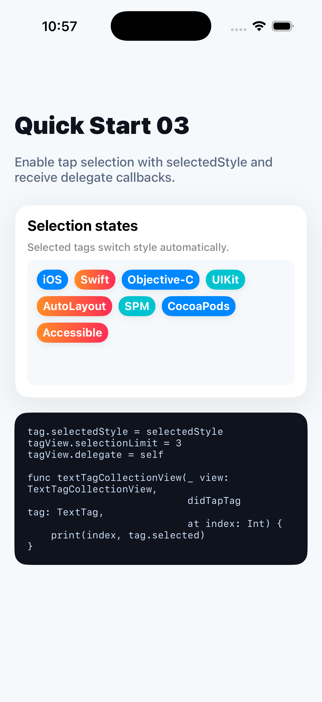

Quick Start 03
Add selected states
Assign selectedStyle, set a selection limit, and use the delegate callback for app behavior.
let selectedStyle = TextTagStyle()
selectedStyle.backgroundColor = .systemOrange
selectedStyle.cornerRadius = 12
selectedStyle.extraSpace = CGSize(width: 14, height: 8)
tag.selectedStyle = selectedStyle
tagView.selectionLimit = 3
tagView.delegate = self
func textTagCollectionView(_ view: TextTagCollectionView,
didTapTag tag: TextTag,
at index: Int) {
print(index, tag.selected)
}